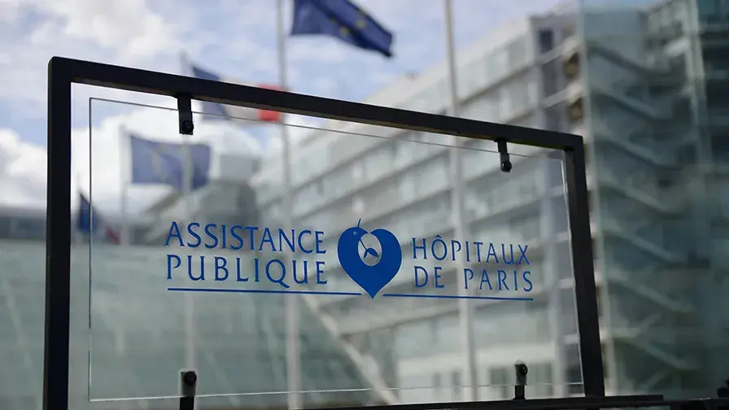
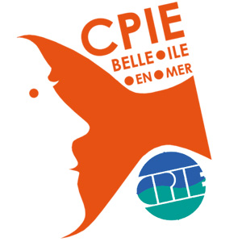

Data · Santé
Analyse de données médicales — AP-HP
Traitement de données patients, calcul automatisé de scores cliniques en Python et génération de fiches PDF personnalisées.
Je transforme des données complexes en outils de décision clairs, fiables et faciles à lire. De la collecte au tableau de bord interactif, j'accompagne chaque étape de la chaîne de traitement de l'information.

Étudiant en BUT Sciences des Données à l'IUT de Vannes (Université Bretagne Sud), je me forme aux métiers de l'analyse et de la valorisation de la donnée : statistique, modélisation, traitement, développement décisionnel et restitution.
En parallèle, je réalise une alternance de Data Analyst au GIP SESAN à Paris, au sein du département Traitement de l'Information. J'y développe un tableau de bord interactif pour le suivi des indicateurs d'une plateforme de coordination en santé en Île-de-France.
Au fil de mes projets et de mon alternance, j'ai pris goût à un travail à la fois technique et lisible : structurer des données, les analyser rigoureusement, puis les présenter de façon claire pour aider à la décision.
Mes projets (SAÉ) et mon alternance s'appuient sur les cinq blocs de compétences du référentiel BUT Sciences des Données.
Concevoir et construire des applications et tableaux de bord qui aident à la prise de décision.
Recueillir, échantillonner et modéliser des données selon une démarche statistique rigoureuse.
Nettoyer, transformer et structurer les données pour les rendre exploitables.
Explorer, décrire et interpréter les données pour en extraire des résultats fiables.
Restituer et communiquer les résultats de façon claire et adaptée aux destinataires.
Une sélection de projets menés pendant ma formation. Cliquez sur « Voir le détail » pour parcourir les visuels et la description complète.

Traitement de données patients, calcul automatisé de scores cliniques en Python et génération de fiches PDF personnalisées.

Conception d'un questionnaire et analyse statistique pour le CPIE de Belle-Île-en-Mer.
Analyse en Composantes Principales et reporting d'une analyse multivariée sous R.
Au sein du GIP SESAN, j'interviens sur le développement front-end d'un tableau de bord destiné au suivi des indicateurs d'usage d'une plateforme régionale de coordination en santé, à destination de l'ARS Île-de-France et des équipes internes.
Mon travail couvre la conception de l'interface, la mise en place des filtres dynamiques, des graphiques interactifs et des cartes, ainsi que la restitution claire des indicateurs pour les utilisateurs métiers.
Cette expérience m'a permis de monter en compétence sur le développement d'applications web décisionnelles, la manipulation de bases de données et le travail en équipe projet dans un environnement professionnel exigeant.

Une question, un échange ou une collaboration ? Écrivez-moi directement, je vous répondrai rapidement.